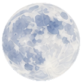
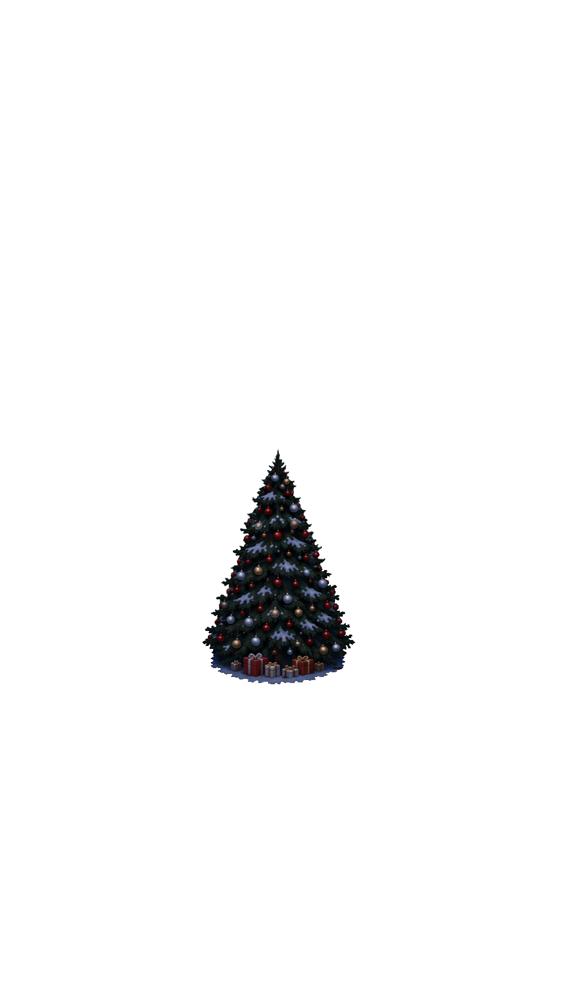
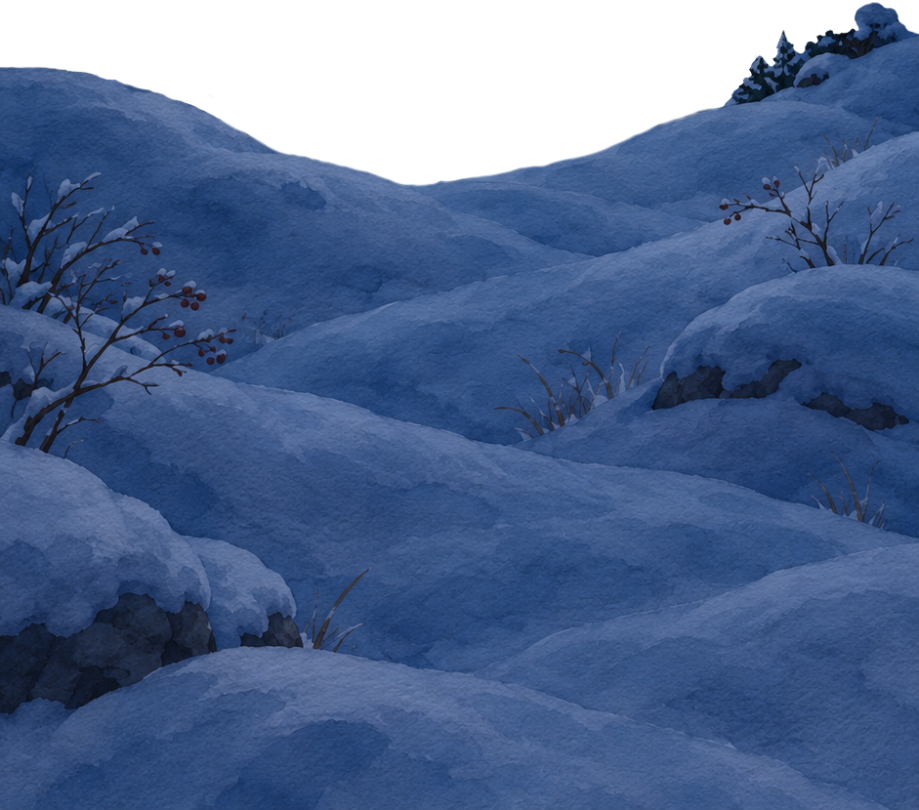

Calendario de Adviento
Tu pollito preparó muchas cosas…



Guardando nuestros recuerdos…
DESCUBRE TU PRÓXIMO REGALO EN
Una pequeña ilusión nos espera…
Aquí aparecerá una sorpresa real.
Los vales que encuentres en tus sorpresas aparecerán aquí.